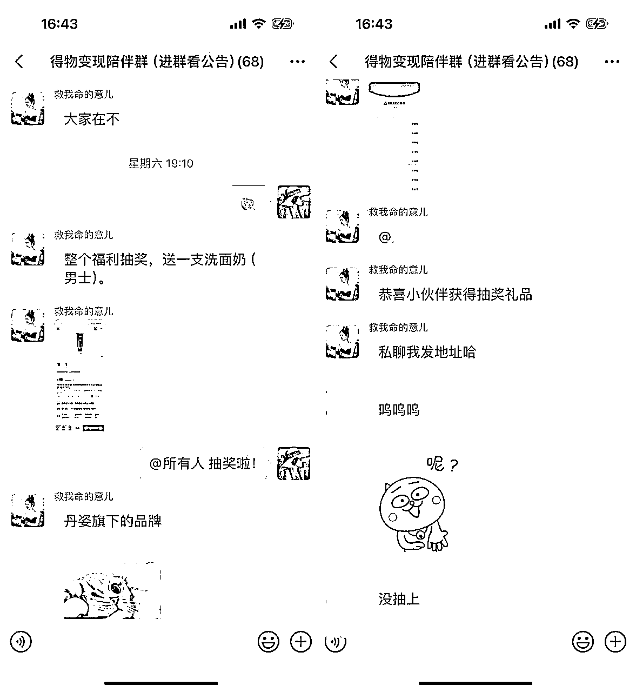

来源：https://jvx6nnxr4va.feishu.cn/docx/IdKbdtd0ToZZ5GxQ5TVcz2kDnrd
大家好，我是“左手育儿，右手事业”的全职自媒体宝妈小又。
双十一期间，我们成功发售了得物终身陪伴群这个产品，7天招生58名，团队收款约1.3w。今天把我的发售经验跟大家分享一下，希望对以后有产品发售需求的同学一些启发。
我们原计划双十一期间招50名学员算成功，因为我们这样的小ip，流量都不是很大，宣传比较仓促，发售时间也比较短。经过7天的宣传，最终我们招生58名，这也非常感谢陈舟老师的支持，不然也很难获得这个成果。
这个产品虽然小小的超预期发售了，但也有很多可以改进的地方。
我和我的搭档清欢意是在【同舟共富】星球得物打卡营开营之前有了要做社群的想法。我们在我的星球【副业变现圈】第一次做得物打卡营的时候就有很多小伙伴催我们出进阶课，我们也确实想过要做进阶课，但后来发现，很多小伙伴提出了新的问题，也有打卡营的小伙伴来问一些我们讲过的问题。
再开一期进阶课，一来招生可能没那么好招，二来得物是个购物平台，种草跟小红书有点类似，这就注定了它的规则会不定时面临着比较大的改动，毕竟要保证种草真实客观，又要尽量吸引更多人通过种草下单。
综合分析，我觉得做陪伴群更合适。其实这个想法也是借鉴了攀哥一条闲鱼社群的交付模式。我把我的想法跟意儿说了以后，她说她也是这么想的。于是我赶紧找陈舟老师聊，舟舟老师也非常认可这个想法。说干就干，聊完之后我就去做市场调研了。
我先去各大平台搜了得物这个关键词，发现得物APP在推广方面很下血本，各大短视频平台，各类大小赛道的博主都有接得物APP的广告，平台肯定是稳了。
接着我又在得物上面搜了大小达人的收入，五百粉以内，月入大几百到一千很多，两三千粉月入大几千到一万也不少，粉丝再多一些的，收入更高。同样的粉丝数，在其他平台没有这个收入，而得物除了有广告收入、带货赏金，还有产品免费拿，创作难度比其他平台低一些，得物不要求非常精致，更注重用户的真实体验。
这就意味着你不需要有很专业的拍摄技能或者作图技巧，当然，你要是有相关的技能肯定是锦上添花，但没有也不是特别影响，真实即可。这更说明这是个值得普通人去深耕的平台。
我又去搜了得物好物种草相关的训练营，几乎没有。在生财有术也搜了，只有一位圈友发了得物相关的长贴，得物好物种草相关知识付费产品在目前市场上还是比较空缺的。
平台好，作者变现容易，且目前付费课程几乎没有，这说明这个赛道目前竞争比较少，我们如果现在去做，运营得当，应该能做出一些成绩来。
另外陪伴群的方式可以灵活招生，还能给学员更长久的交付，值班式陪伴交付，体验感也好，实际交付起来也没有那么辛苦。
我们的思路和方向，应该没有错了。
有了相关的调研后，我就开始做社群运营方案了，因为这个社群是我跟意儿合作的，所以分工上，我们也有一些区分。
我和意儿都有带教经验，她之前做过小红书新手课，又做了两期打卡营，得物学员累计260+，我带了一年多私教，前不久也刚带了一期朋友圈IP打卡营，教学交付方面是没有问题的。
我擅长运营、宣传，也有一点流量，那么社群运营、引流主要由我负责，我出相关的运营方案、安排宣传节奏、提供宣传文案、素材等。
意儿擅长实战，钻研一个平台的玩法，她比我更有耐心，想法也更多，所以得物教学这块主要由她负责。
日常答疑由我们俩轮流值班进行交付，帮学员修改文案、不定时加餐、作图、拍摄指导等。一篇合格的种草动态大概也就是这些要素，学员们一边学习一边实战，把这些问题解决了，得物好物种草这个赛道基本也都能跑通了。
通过两期打卡营的成果来看，学员的成材率还是不错的，陪伴群的效果应该也不会差。
发售方案写好以后，我们就正式开始宣传了。发售氛围短时间内营造得还算可以，我的宣传经验也给大家分享一下。
其实在方案写好之前我们已经在朋友圈、公众号有意识地去推得物了。
如果要推一个产品，就要在平时潜移默化地去提，让大家知道你一直在做这件事，等正式宣传的时候才不会显得太突兀。
盲订这个概念，也是看朋友圈的大佬们发售产品的时候学来的。
写方案的同时，在我星球的微信社群里通知大家，我们要做得物社群了，需要的伙伴可以盲订，定金99元，最终价格还没有确定，但首发价肯定超值。
消息放出来以后，好几个伙伴都直接转账预定了。
因为宣传得比较临时，所以盲订的人也不多，盲订只在我的星球微信社群里收了8位学员，如果时间可以再提前一些，效果应该会更好。
方案写好当天，海报都还没做出来，我就开始截方案的图宣传，宣告我们要做得物社群了，方案一出来，报名的人陆续就多起来了，两三天时间，大概报了二十多人，到【同舟共富】打卡结营，一共报了四十多人。
我跟意儿的小目标是能收到50人就算是个好的开始。
到双十一结束，我们已经收了58名学员了。
好的宣传并不是直接打广告，而是讲故事、给干货。
我分销了很多人的产品，包括我在做资料项目的时候，打广告从来不打硬广，我会从自身出发，去讲一个故事。
粥左罗老师在直播间分享过：很多时候别人给你付费，不是为了知识，而是为了你，或者为了你+你的知识，注意，是“你的”、知识。
我们在罗永浩直播间下单，很多时候是因为我们知道他欠债的故事，对这个经历感兴趣；我们在新东方直播间下单，很多时候也是因为他们不仅在卖东西，还在讲故事以及传授知识。
因为所有的直播间都很难有不可替代性，他们在卖，别人也在卖，选择在他们那里付费，就是因为我们更了解他们，他们也提供了一些额外的服务。
所以讲故事是最好的宣传。
宣传的时候我会说我做得物的心得、踩坑经历，说学员的成绩或者故事，我很少会直接说：“得物好！大家都来跟我一起做！”
我平时分销别人的产品，一般也不会直接用对方提供的文案，我会用心写自己对这个产品的理解，或者我与主创者之间的一些故事。
比起生硬的宣传，你的用户其实更喜欢看到你本人对这个产品的感受或者态度，很多时候用户不是冲着产品买单的，而是冲着你本人。
不用担心自己的朋友圈营销感太强，在推产品的时候密集营销是必须的，我双十一期间朋友圈五条打底。
通过我报名的，公众号来的同学有4个，其余的都是朋友圈成交的，来一个发一个。
不用担心朋友圈被折叠，我经常被折叠，一开始我也用防折叠神器，后来就不管用了，该折叠照样折叠，于是我就没在管了，它折叠它的，我发我的，把关键信息放第一行，只要你平时输出的内容对大家比较有吸引力，就算你促销期间朋友圈被折叠，也会有人专门点进去看。
当时我差不多每条朋友圈都被折叠了，但该成交的照样会成交。
而且折叠也不是针对所有人，有些人看是折叠的，有些人看又是正常，这个我也测试过了。
反正只要你内容做好了，就算被折叠了也没关系。
单靠我或者意儿，招生还是没有那么容易的，除了有舟舟老师帮我们宣传，我另外还谈了几个合作，在别人的社群做分享，然后给一定的分佣。
这块做得不是很到位，所以效果没有达到预期。
如果自己流量不够的话，招生的时候可以考虑这个方式。
我最开始知道可以这样是去年，我看到有人在我所在的社群里面分享，然后招生，当时还在想，为何ta可以在这么大的群里打广告，后来我觉得应该是跟群主有合作。
当时我的自媒体认知还不是很够，只是隐隐觉得我想的应该是对的。
后来我发现很多人都是用这样的方式去招生的，那么应该没错了，所以这次发售我也用了这个方法，虽然效果没有达到预期，但是也成交了几个学员。
而且一篇分享稿一两千字，可以用好几个社群，就算成交一两个学员，那就是几百块，一篇稿子几百块，还是很划算的，这篇稿子还可以去各大星球去发布，又可以引流一波。
虽然我们的社群定价不高，但是一个知识付费产品该有的内容或者流程，我们一样也不少。
我觉得做任何产品都要有仪式感，之前我们摸索着做打卡营，开营要有开营仪式，跟大家分享我做这个产品的初衷，这个项目的可行性，目前的成绩，社群的规则等等，把好话说完也要把“丑话说在前头”。
做打卡营这样的产品，结束的时候，优秀学员颁奖、发言也是要有的，最好再做一个证书，这样也是一种宣传方式，或许就有小伙伴自发地去发朋友圈帮你宣传了。
比如我做朋友圈IP打卡营结营的时候除了做荣誉证书，也安排了优秀学员发言，效果还是很不错的，有些同学也自发地去发了朋友圈或者公众号。
像得物陪伴群这种终身性质的社群虽然没有结营仪式，但是开群仪式我们是花了心思去做的。
因为是我跟意儿合作的社群，所以开群仪式我们是按各自的分工去做的，我这部分主要侧重做社群的初心、社群的功能、奖励制度等，意儿主要讲得物专业性方面的内容。
我们对外宣传的时候是没有说的有奖励的，到开群那天才公布我们的奖励政策，自己在得物赚钱到一定金额，我们有奖励，分销还有额外的奖励。
其实一开始我想的是有分销政策就可以了，后来觉得是不是还给一些激励政策给大家，调动大家做得物的积极性，所以我又做了三个等级的赚钱奖励政策，从易到难，把奖励拿完，门票钱也就赚回来了。
大家积极去做，我们的成功案例就更多，宣传的时候也会有更多的素材。
另外，我们还有不定时的加餐，不定时的抽奖，给大家提供拍摄的产品，光这些就值回票价了。

有学员在开群之前就分销了，立马赚回了差不多一半门票钱，之后分销这块可能我也会再做一些活动。
我们的宣传时间，满打满算才7天，这个宣传周期其实很短，如果可以的话，建议大家至少提前15天，高客单价产品提前一个月宣传都可以。
之所以宣传周期这么短，一是有打算在【同舟共富】得物打卡营结营再宣传，二是当时手上有很多事情要忙，腾不出时间来写方案。后来又觉得双十一这个热点很适合推产品，所以匆匆忙忙开始宣传。
宣传期可以说的内容很多，有需要的小伙伴可以从以下四个方向安排宣传内容：
①你本人做这件事的干货
②学员故事
③写课进度（一边写课一边宣传）
④盲订故事（付款人跟你的故事）
其实我们还有很多学员故事没有宣传，朋友圈是一个窗口，公众号也是，更好的宣传应该是公域+私域。
我其实可以跟优秀学员约稿，或者自己把优秀学员的故事写下来，发在公众号或者发到其他公域平台。
老师做得好不算是真的好，老师带的学员也做得好，才是真的好。这也是我平时知识付费的时候的一个重要的参考标准，优秀学员是宣传的时候最好的素材。
由于准备时间比较仓促，我们宣传物料没有好好整理，既定的合作目标也没有来得及完成，因为双十一期间，大家都有自己的活动要做，我们这个时候推产品，对于有一定流量的人来说，是有点冲突的，所以我也合理地被礼貌地拒绝了两次。
还有一个原因是素材准备得不充分，合作宣传形式考虑得过于单一，当时想的主要是社群分享干货的形式去合作，其实还可以询问别人是否可以帮转发一下朋友圈或者公众号。
以上就是我这次的发售复盘，虽然比起大佬，我的宣传还显得比较稚嫩，但这些也都是我通过观察别人的宣传学到的一些皮毛，之后肯定会做更多尝试，不断把社群壮大。
有了这些经验，下次再有产品发售的时候，或许我会做得更好~